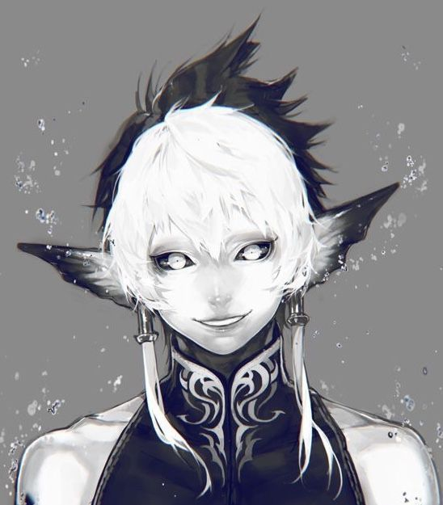
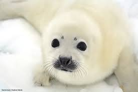

Name

Basics
Name
Marcus Reynolds
Username
Aenon
Guild
n/a
Gender / Pronouns
DemiBoy , He/They
Age
19
Orientation / Sexuality
Gay
Availability
Single
Personality
Aenon is the pinnacle of an INFP. He's prone to overthinking things and might not be able to approach someone, but if they make the first move, he'll hold on tight and do anything for them. He is incredibly nurturing, committed, and protective of his loved ones and does everything in his power to make sure they're comfortable and feel safe with him.
Character Stats
Race / Class
Selkie
Level
45
Extra Extremities
Cute little selkie ears. Gills on his neck.
Abilities
- Hydrokinesis, Can generate and manipulate water. Can be used to heal. Or kill. He takes the moisture from the air, or whatever he touches.
- Blood Bending,Allows the user to take hold of and manipulate fluids within an organism's body, allowing the bender to move the organism's muscles.
- TransformationCan transform into a harp seal.

Weaknesses
Needs to be atleast a little moist....weak to plants, and electricity.
Special Skills
He can breath under and over water.